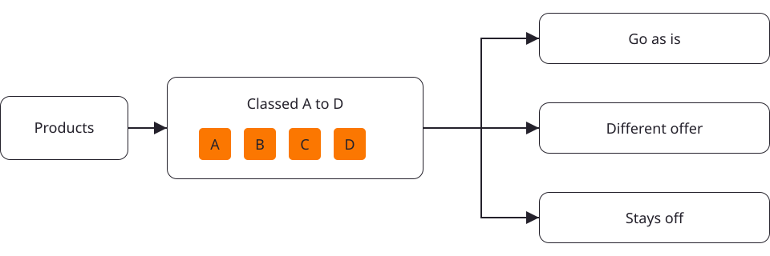

Product decision.
Each product classed A to D against the Amazon business it sits in, with the reasons written down. Some products go as they are. Some need a genuinely different offer. Some stay off Temu, and we say so.
The Temufy Launch Programme
Training, live calls and a seller community for Amazon brand owners launching on Temu. Start with the right product, check your numbers and your Amazon exposure, then launch with people who sell there.
Tell us your products. We tell you which could go to Temu as they are, which need a different offer, and which should stay off.
For US Amazon brand owners with a US entity and stock in the country.
You have watched Temu grow and kept putting it off. Temu's US local seller route is for sellers with a US entity and stock in the country, and you already have the products, the entity, the stock and the fulfilment. What you do not have is a clear route through registration, pricing and listings on a marketplace that works differently from Amazon, or a straight answer on what it does to your Amazon business. This programme gives you both.
Facts from Temu's own published material:
US sellers list through Temu's local seller programme.
Sellers set their own base price and can propose a new one if they disagree with Temu's recommendation.
Registration, shipping settings and listings all happen in Temu's Seller Center, and the programme walks you through each screen.
Choose and protect
Amazon compares prices across the web, and it compares at the unit, so a bigger pack or a new barcode does not hide a product. Put the wrong product on Temu at the wrong price and you can lose the Buy Box on the listing that pays your bills. So every product goes through a review before it goes anywhere near a Temu listing.
Each product classed A to D against the Amazon business it sits in, with the reasons written down. Some products go as they are. Some need a genuinely different offer. Some stay off Temu, and we say so.
What the Temu customer receives against what the Amazon customer receives, delivered and unit prices side by side, promotion scenarios, and the floor you will not go below.
Proceed with the controls recorded, revise the offer, or stop. You decide with the facts in front of you.
A baseline of your Amazon listings before you launch, a daily check for your first 60 days, the actions you are authorised to take the day something changes, and the evidence to dispute a wrong match.

Example record
If a product matters on Amazon and cannot be made genuinely different, we tell you not to launch it. A refund would not cover what a lost Buy Box costs, so we would rather lose the sale.
We checked this approach with 2 people who have run Amazon categories, including a former Amazon executive, and it is reviewed against what Amazon and Temu publish.
Nobody can promise what Amazon's systems will do. We promise the review, the plan and the watch.
That is the first thing we look at, product by product, before you list anything. See the Amazon Exposure Review above.
You set your floor, the minimum you must keep per unit, before you list, and you judge every recommendation and promotion against it. The programme teaches when to decline, when to appeal and when to stop.
It is a checklist. You get the document list, the screens, what to do while Temu reviews your application, and the settings that matter, in order.
No. Temufy is an independent training and support programme, and the page says so wherever it counts.
Built from US operating procedures and documented seller experience, with examples labelled by market. You do the steps in sequence, with a written review before you publish anything.
Confirm your entity, products and fulfilment fit, and what Temu will ask for.
Register and verify in Seller Center with the document list, and know what to do while Temu reviews you.
Set shipping and returns once, correctly.
Run your products through the US pricing workbook and set the floor you will not go below.
| Product price | USD 30.00 |
|---|---|
| Temu base price | USD 24.00 |
| Product cost | USD 8.00 |
| Estimated fees | see your account terms |
| Fulfilment | USD 5.00 |
| Returns allowance | USD 1.00 |
| Contribution per unit | USD 10.00 less account fees |
| The floor | USD 5.00 contribution per unit |
Illustrative calculation: USD 24.00 less USD 8.00, USD 5.00 and USD 1.00 leaves USD 10.00 before account fees. The floor is met only if account fees are USD 5.00 or less. Product price is not seller proceeds.
The Amazon Exposure Review on every product, and the different offer where one is needed.
Build your first listings by hand, then connect Shopify's native Temu channel.
Walk a test order from placement to delivery before a real one arrives.
Turn on promotions and ads with a plan, not a guess.
Run the daily store checks, watch your Amazon listings, and know your next action when something changes.
Your economics and exposure reviews happen at steps 04 and 05, before you list.
Andrew Coates sells on Temu and built the programme from what happened in his own stores. The registration screens. The price recommendations and how to answer them. The appeals that worked and the ones that did not. The daily checks that keep a store healthy. The programme is his path, written down so you can walk it.
Examples are labelled by market. Where something was observed in Australia, it says so.
The product decision, the offer and price comparison, the launch decision and the watch and respond pack, on every product you want to launch. Inside the programme, not sold separately.
The 9 steps above as lessons, with the screens, settings and worksheets. Access for 12 months.
Written reviews of your product economics and your Amazon exposure, each with a clear next action.
Bring your store and your questions, every week for 60 days from enrolment, with Andrew on the calls.
Other brand owners launching at the same time, included for 60 days.
Stuck on a Temu screen, a price recommendation or a rejection? Send it in and get help understanding it, preparing the evidence and choosing the next action.
The daily store health checklist and the handover sheet for your VA. You assign the checks instead of remembering them.
Editable appeal templates and an evidence checklist, drawn from observed cases in Australia, so a price or traffic problem gets a complete answer, not a panic.
The profitability workbook and the promotions versus advertising calculator, so you know the combined cost before you join a promotion.
A dated guide to Temu's own Seller Academy and Help Center material, organised around the steps above, so you find the rule you need in a minute.
Retiring stock?
Some sellers come to Temu with a product they have decided to stop selling on Amazon and stock they want to turn into cash. The Clearance Lane takes that product through the same review, with one extra check: that clearing it on Temu cannot cap the price of the listings you keep. Excess stock on its own is not retirement. If the product still matters on Amazon, it goes through the full review like any other.
Try the programme for 14 days from enrolment. If it is not right for your business, ask for a refund and you get your programme payment back in full.
Submit your readiness, economics and exposure worksheets within 30 days, answer our requests within 5 business days, and if we have not delivered your written reviews and a clear next action plan by day 60, you choose a full refund or 30 more days of launch support at no charge. If the reviews are still undelivered at day 90, we refund you. You keep course access either way.
Temu controls verification, listing approval and platform decisions. Amazon controls its own systems. We do not guarantee approval, sales, revenue, profit or Buy Box protection, and we would not trust anyone who did.
Founding members who reach a first valid delivered order, with the product still making a positive contribution, within the included 60 days earn a $497 credit toward Temufy Membership. Claim it after the 14 day refund window and activate it by day 90. It applies from day 61 to membership invoices of $47 a month, which covers 10 full months and part of the eleventh. One credit per programme purchase. It is credit, not cash, nothing bills automatically, and a programme refund cancels any unused credit. Membership is optional and by explicit opt in, and it carries the weekly calls, the community and updated procedures beyond your first 60 days.
30 places. The next cohort price is $997, and the founding price is never reopened. No payment plan, no subscription unless you choose one later.
14 day refund, no questions asked. Card payment, secure checkout.
What happens next: your login arrives within a few minutes, the readiness worksheet and the exposure worksheet the same day, and the invitation to the first live call with them.
Start here
Send us your products and a little about your Amazon business. We come back to you within a few days with which products could go to Temu as they are, which would need a genuinely different offer, and which should stay off. No charge, no obligation, and the same first step every programme member takes.
Yes. Temu's US local seller route is for sellers with a US entity and stock in the country. If you are not there yet, step 01 tells you what is needed.
Plan on a few hours a week for the first 60 days, more in the registration and listing weeks.
Then we tell you, and you have not paid for a programme you cannot use. That is what the free check is for.
Account manager access is not a guaranteed benefit. You get help preparing support requests and choosing the right escalation route.
Check the terms on your own account and include fulfilment, advertising, promotions, returns and cash timing in your product economics. The workbook is built for exactly that.
Yes. You list by hand first, then connect Shopify's native Temu channel. Other tools are covered as an advanced path.
An optional continuation after your 60 included days, $47 a month, by explicit opt in. Founding members who launch earn a $497 credit toward it.
No. Temufy is an independent training and support programme and is not an official Temu programme.
14 days, full refund, no reason needed.
Start with the free check. Then 30 founding places, $497 once, a path already walked, and people to walk it with.